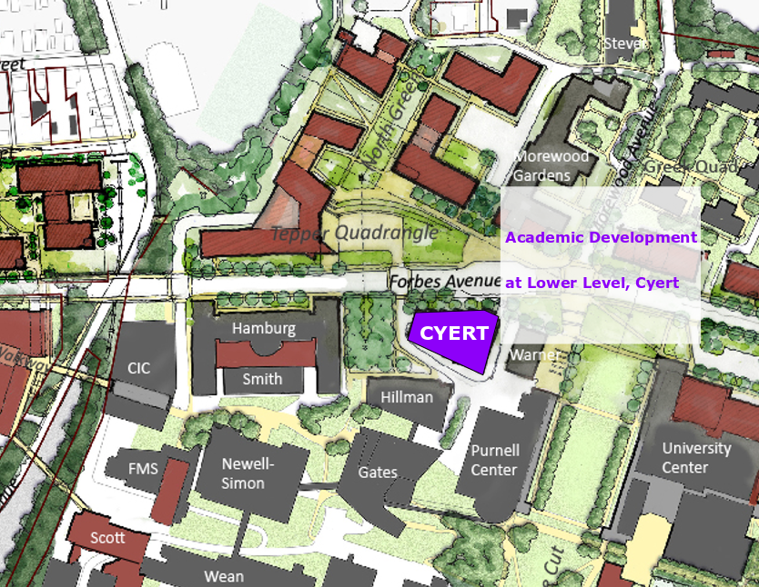
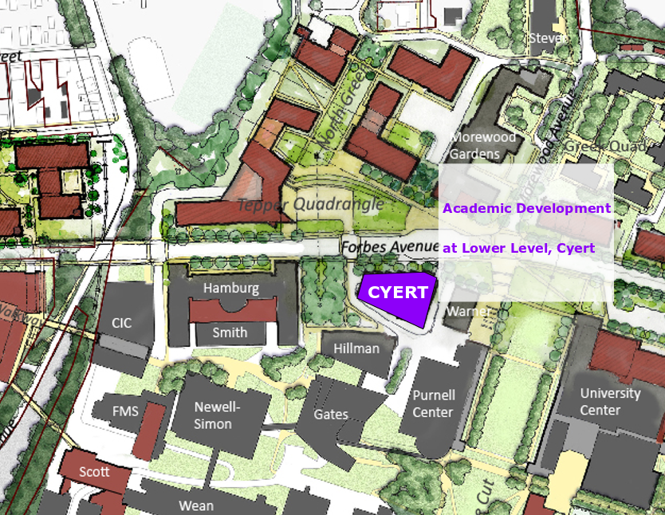

ACADEMIC DEVELOPMENT
Provides academic help for all undergraduate students in all schools in the university
LOCATION & TIME
No set hours; vary depending on services
Cyert Hall B5
SERVICES
1. Student consultation and learning resources
2. Peer tutoring
3. Supplemental instruction (SI)
4. EXCEL Collaborative Learning Groups
5. Academic Coaching
COMMONLY ASKED QUESTIONS

“ In High School we had organized study sessions, does CMU do anything like that or will I have to organize my own? “

“ A lot of intro classes have SI and EXCEL sessions, which are organized recaps of what you are learning in class led by trained academic development employees. “
“ I never really learned how to study in High School and now I’m kind of nervous about CMU, I know it’s super tough here. “

“ Don’t worry, a lot of students start out in the exact same situation. If you ever feel like your struggling and need some help learning study skills, Academic Development can help teach you those kinds of things. “
“ I don’t really like the teaching style of my TA or professor and I get kind of nervous in groups, are their any one-on-one tutoring sessions available through the school? “

“ Through academic development you can organize a weekly hour long tutoring session for any class on campus. Best of all, it’s free! “
FIND ACADEMIC DEVELOPMENT

